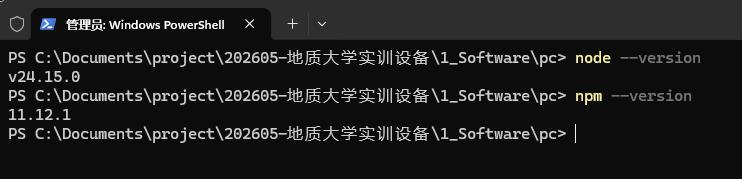
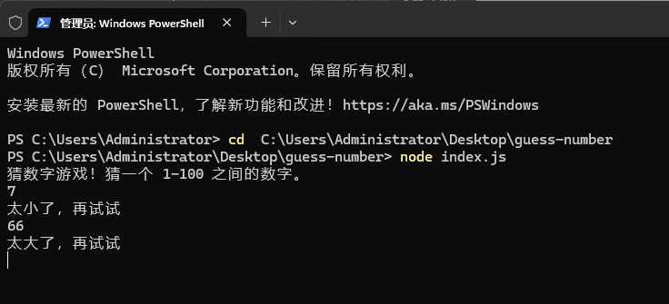
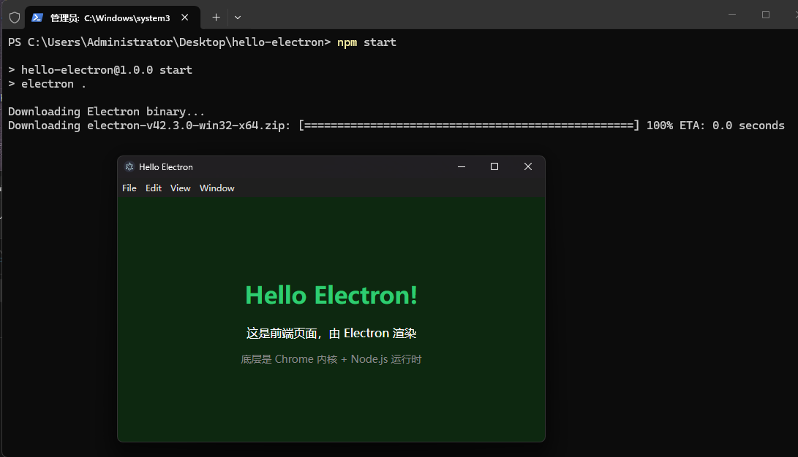
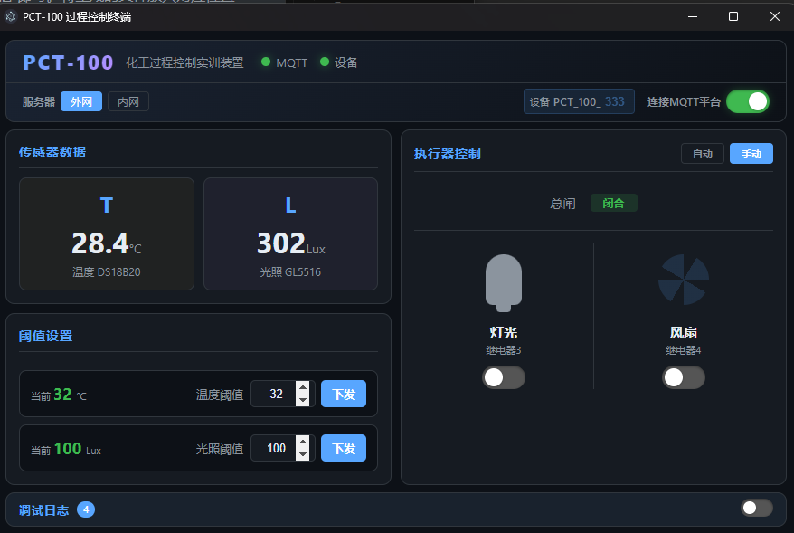

第10课时：Node.js 与 Electron 桌面应用开发
课程总目标： 本课时接续第9课时的前端基础，从 Node.js 开始，到 Electron 联通前后端，最后打包成 PCT-100 上位机 exe。
课时目标
- 了解 Node.js 是什么、能做什么
- 动手完成一个 Node.js 小实验
- 理解 Electron 如何联通前端（HTML 界面）和后端（Node.js 系统功能）
- 编写 PCT-100 上位机代码
- 将上位机打包成 Windows 便携 exe
第一部分：Node.js 介绍
1.1 什么是 Node.js
Node.js 是一个 JavaScript 运行时环境，让 JavaScript 可以脱离浏览器运行在服务器或桌面上。
| 浏览器中的 JS | Node.js 中的 JS | |
|---|---|---|
| 运行环境 | Chrome/V8 引擎 | 独立 V8 引擎 |
| 可访问 | DOM、BOM | 文件系统、网络、进程 |
| 用途 | 网页交互 | 后端服务、工具脚本、桌面应用 |
1.2 安装 Node.js
- 访问 https://nodejs.org/download/release/v24.15.0/
- 下载
node-v24.15.0-x64.msi（Electron 与最新版 Node.js 存在兼容问题，使用此版本） - 安装向导全部默认下一步
⚠ 如果双击.msi无反应，以管理员身份运行或使用命令行安装：
msiexec /i "C:\Users\Administrator\Desktop\node-v24.15.0-x64.msi"
- 验证安装：

1.3 npm 包管理器
npm（Node Package Manager）是 JavaScript 的"应用商店"，可以下载别人写好的代码包。
以安装 MQTT 通信库为例：
npm init -y # 初始化项目，生成 package.json
npm install mqtt # 安装 mqtt 包（写入 dependencies）
npm install --save-dev electron # 安装 electron（写入 devDependencies）
npm start # 运行 package.json 中 start 脚本npm install 包名将包下载到node_modules/，并记录到dependencies（运行时依赖）npm install --save-dev 包名记录到devDependencies（仅开发/打包需要）- 每个项目都有独立的
node_modules/，互不干扰
1.4 package.json 结构
package.json 是项目的"身份证"和"说明书"，npm 通过它来识别项目和管理依赖。
{
"name": "my-app",
"version": "1.0.0",
"description": "我的应用",
"main": "index.js",
"scripts": {
"start": "node index.js"
},
"dependencies": {
"mqtt": "^5.3.0"
}
}| 字段 | 含义 | 说明 |
|---|---|---|
name | 项目名称 | 不能有中文和空格，npm 包名唯一标识 |
version | 版本号 | 语义化版本 主版本.次版本.补丁 |
description | 项目描述 | 可选，方便别人了解项目用途 |
main | 入口文件 | node . 或 npm start 时执行的文件 |
scripts | 自定义命令 | 用 npm run xxx 执行，start 可省略 run |
dependencies | 运行时依赖 | 项目真正需要跑的包（如 mqtt） |
devDependencies | 开发依赖 | 开发/打包时才用的工具（如 electron） |
1.5 动手实验（举例：猜数字游戏）
此处只是一个示例项目，学生可以自选主题，用 AI 辅助生成自己的 Node.js 命令行程序。下面是猜数字游戏的参考实现，供理解代码结构用。
创建项目：
mkdir guess-number
cd guess-number
npm init -y编写 index.js：
// 生成 1-100 的随机数
var target = Math.floor(Math.random() * 100) + 1;
var attempts = 0;
console.log('猜数字游戏！猜一个 1-100 之间的数字。');
// 标准输入读取
process.stdin.on('data', function(data) {
var guess = parseInt(data.toString().trim(), 10);
attempts++;
if (isNaN(guess) || guess < 1 || guess > 100) {
console.log('请输入 1-100 之间的有效数字');
} else if (guess > target) {
console.log('太大了，再试试');
} else if (guess < target) {
console.log('太小了，再试试');
} else {
console.log('恭喜你猜对了！共用了 ' + attempts + ' 次');
process.exit(0);
}
});运行：
node index.js
第二部分：Electron 介绍
2.1 什么是 Electron
Electron 是一个框架，允许用 HTML + CSS + JavaScript 开发跨平台桌面应用。简单理解：
┌─────────────────────────────────────┐
│ Electron 应用 (.exe) │
│ ┌───────────────────────────────┐ │
│ │ Node.js 运行环境 │ │ ← 负责系统功能
│ │ (读写文件、网络、MQTT) │ │
│ ├───────────────────────────────┤ │
│ │ Chrome 浏览器内核 (Chromium) │ │ ← 负责显示界面
│ │ (渲染 HTML/CSS/JS 页面) │ │
│ └───────────────────────────────┘ │
└─────────────────────────────────────┘一句话总结：
Electron = 把 Node.js + 前端页面（HTML/CSS/JS）打包成 Windows / Mac / Linux 桌面软件的工具。
三层拆解：
- 底层 = Chrome 浏览器内核（负责显示前端页面）
- 上层 = Node.js 运行环境（负责读写文件、调用系统、操作硬件、网络通信）
- 打包 = 把这俩打包成
.exe/.dmg/.deb - 结果 = 你写的网页，变成了桌面软件
代表产品： VS Code、Slack、Discord、WhatsApp Desktop
2.2 Electron 架构 —— 前后端如何联通
┌─────────────────────────────────┐
│ 主进程 (main.js) │
│ - Node.js 全 API │
│ - 创建窗口、管理窗口 │
│ - 访问文件、网络、MQTT │
└────────────┬────────────────────┘
│ IPC (进程间通信)
┌────────────▼────────────────────┐
│ preload.js (桥梁) │
│ contextBridge.exposeInMainWorld │
└────────────┬────────────────────┘
│ window.mqttAPI.xxx()
┌────────────▼────────────────────┐
│ 渲染进程 (index.html) │
│ - 普通 HTML/CSS/JS 页面 │
│ - 不能直接 require('mqtt') │
│ - 通过 preload 间接调用主进程 │
└─────────────────────────────────┘关键理解：
- 主进程 = Node.js 后端，做系统级的事情（MQTT、文件、硬件）
- 渲染进程 = 前端页面，负责界面展示和用户交互
- preload.js = 桥梁，安全地把主进程的能力暴露给前端
- IPC = 进程间通信的通道
2.3 主进程 vs 渲染进程
| 主进程 | 渲染进程 | |
|---|---|---|
| 数量 | 1 个 | 多个（每个窗口一个） |
| 运行环境 | Node.js 全 API | 浏览器环境 |
| 能否 require | 能 | 不能（除 preload） |
| 职责 | 窗口管理、网络、系统 | 界面渲染、用户交互 |
| 通信方式 | ipcMain.on / send | window.xxxAPI.xx() |
2.4 动手实验（举例：Hello Electron）
此处只是一个示例项目，学生可以自选主题，用 AI 辅助生成自己的第一个 Electron 应用。下面是一个 Hello World 窗口的参考实现，供理解 Electron 前后端联通方式用。
步骤一：创建项目
mkdir hello-electron
cd hello-electron
npm init -y
npm install --save-dev electron步骤二：编写 index.js（主进程，入口文件）
const { app, BrowserWindow } = require('electron');
app.whenReady().then(function() {
var win = new BrowserWindow({
width: 600,
height: 400,
webPreferences: {
nodeIntegration: true,
contextIsolation: false
}
});
win.loadFile('index.html');
});步骤三：编写 index.html（渲染进程）
<!DOCTYPE html>
<html>
<head><meta charset="UTF-8"><title>Hello Electron</title></head>
<body style="display:flex;justify-content:center;align-items:center;min-height:100vh;margin:0;background:#0d2810;color:#fff;font-family:sans-serif;">
<div style="text-align:center;">
<h1 style="color:#2ecc71;">Hello Electron!</h1>
<p>这是前端页面，由 Electron 渲染</p>
<p style="color:#888;font-size:14px;">底层是 Chrome 内核 + Node.js 运行时</p>
</div>
</body>
</html>步骤四：修改 package.json，添加 start 脚本
npm pkg set scripts.start="electron ."这条命令会在 package.json 的 scripts 中写入 "start": "electron ."。配置后，运行 npm start 就相当于执行 electron .。之所以用 npm start 而不是直接敲 electron .，是因为 Electron 安装在项目本地的 node_modules/.bin/ 中，不是系统全局命令，直接敲会报找不到命令；而 npm start 会自动在 node_modules/.bin/ 中寻找并执行，更规范也跨平台兼容。
步骤五：运行（国内用户先设置镜像源，下载会快很多）：
$env:ELECTRON_MIRROR="https://npmmirror.com/mirrors/electron/"
npm start你会看到一个桌面窗口，里面显示了你写的 HTML 页面。Electron 的核心工作就是 把你写的前端页面，变成一个真正的桌面窗口。

2.5 小结
Electron 不是只有打包功能，它的核心作用是：
- 提供 Chrome 内核 渲染 HTML/CSS/JS → 显示界面
- 提供 Node.js 环境 运行 main.js → 做系统功能
- 通过 IPC + preload.js 让前后端安全通信
接下来要写的 PCT-100 上位机，正是基于这个架构。
第三部分：编写 PCT-100 上位机
理解了 Electron 如何联通前后端后，现在开始编写真正的 PCT-100 上位机。它通过 MQTT 与 ESP32 设备通信，实现数据监控和继电器控制。
3.1 项目结构
pc/
├─ package.json # 项目配置、依赖
├─ main.js # 主进程（窗口管理 + MQTT）
├─ preload.js # 进程桥接
├─ index.html # 渲染进程（界面）
├─ css/
│ └─ style.css # 样式
├─ js/
│ └─ app.js # 渲染进程逻辑
└─ dist/ # 打包输出目录3.2 初始化项目
mkdir pc
cd pc
npm init -y
npm install mqtt
npm install --save-dev electron3.3 package.json
{
"name": "pct100-control",
"version": "1.0.0",
"main": "main.js",
"scripts": {
"start": "electron ."
},
"dependencies": {
"mqtt": "^5.3.0"
}
}3.4 项目文件说明
每个文件的作用：
| 文件 | 运行环境 | 职责 |
|---|---|---|
main.js | 主进程（Node.js） | 创建窗口、管理 MQTT 连接 |
preload.js | 桥梁 | 把主进程功能暴露给渲染进程 |
index.html | 渲染进程（浏览器） | 界面结构和元素 |
css/style.css | 渲染进程 | 界面样式 |
js/app.js | 渲染进程 | 界面交互逻辑 |
package.json | - | 项目配置和依赖 |
3.5 用 AI 生成代码
参考上表项目文件说明，把每个文件的需求逐一发给 AI，让其生成对应代码。例如告诉 AI"生成一个 Electron 主进程 main.js，创建窗口、连接 MQTT、处理 IPC 通信"即可。将生成的文件放入对应位置后，运行 npm start 验证。
3.6 启动预览与迭代开发
npm start如果一切正常，会弹出 PCT-100 上位机窗口。但这只是第一版——开发过程是 预览 → 修改代码 → 再预览 的循环，可能要重复很多次才能得到可用的产品。每修改完代码，关闭窗口重新 npm start 即可看到最新效果。

第四部分：打包上位机为 exe
上位机代码已经完成，现在用 electron-builder 把它打包成独立的 Windows 便携 exe。
4.1 安装打包工具
npm install --save-dev electron-builder4.2 更新 package.json
添加 dist 脚本和 build 配置：
{
"name": "pct100-control",
"version": "1.0.0",
"main": "main.js",
"scripts": {
"start": "electron .",
"dist": "electron-builder --win portable"
},
"build": {
"appId": "com.pct100.control",
"productName": "PCT-100 过程控制终端",
"asar": false,
"win": { "target": ["portable"] }
},
"dependencies": {
"mqtt": "^5.3.0"
}
}4.3 打包原理
electron-builder 的工作流程：
- 下载 Electron 内核（约 50MB）
- 将你的代码和 node_modules 打包在一起
- 生成一个独立的可执行文件（含所有依赖）
4.4 执行打包
npm run dist第一次打包会下载 Electron，国内镜像约 1-2 分钟。完成后生成：
dist/PCT-100 过程控制终端 1.0.0.exe4.5 使用打包后的 exe
- 直接双击运行，无需安装
- 可以放在 U 盘里带走
- 到任意 Windows 电脑上直接使用
4.6 关键配置项速查
| 配置 | 所在文件 | 含义 | 为什么这么设 |
|---|---|---|---|
protocolVersion: 4 | main.js | MQTT 3.1.1 协议 | EMQX 不支持 MQTT 5.0 |
contextIsolation: true | main.js | 隔离渲染进程上下文 | 安全最佳实践 |
asar: false | package.json | 不压缩资源文件 | mqtt 包在 asar 内可能出问题 |
portable | package.json | 打包成免安装 exe | 学生电脑无需管理员权限 |
常见问题
Q: npm install 报错？
A: 检查网络；尝试 npm config set registry https://registry.npmmirror.com 切换国内镜像。
Q: Electron 窗口白屏？
A: 检查 main.js 中 loadFile('index.html') 路径是否正确。
Q: MQTT 连不上？
A: 检查服务器地址和端口；检查设备是否在线；EMQX 需要 protocolVersion: 4。
Q: 打包报错 sign 失败？
A: 在 build.win 中添加 "signAndEditExecutable": false。
Q: 打包后 exe 运行报错？
A: 确保 asar: false；检查 node_modules 是否完整。
本课总结
| 知识点 | 掌握程度 |
|---|---|
| Node.js 基本概念 | 理解运行时、npm、package.json |
| Node.js 小实验 | 能独立编写和运行 CLI 程序 |
| Electron 架构 | 理解主进程/渲染进程/preload 如何联通前后端 |
| PCT-100 上位机 | 能完整编写 MQTT 通信的上位机 |
| 打包部署 | 能独立打包出 Windows 便携 exe |
通过两课时的学习，你已经掌握了从网页开发到桌面应用的完整技能链！